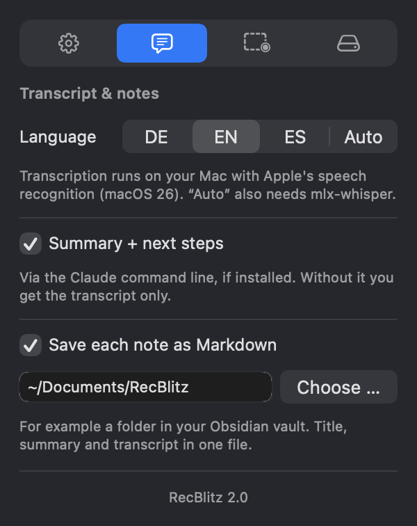
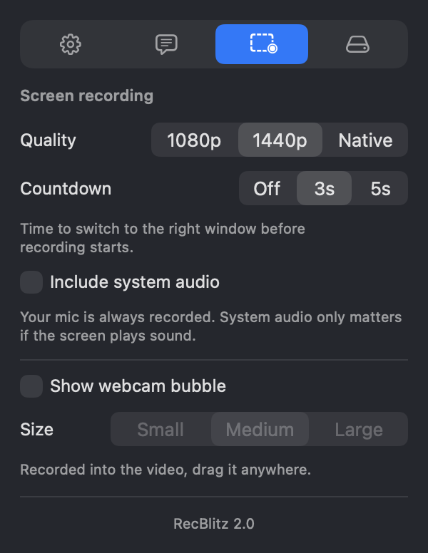
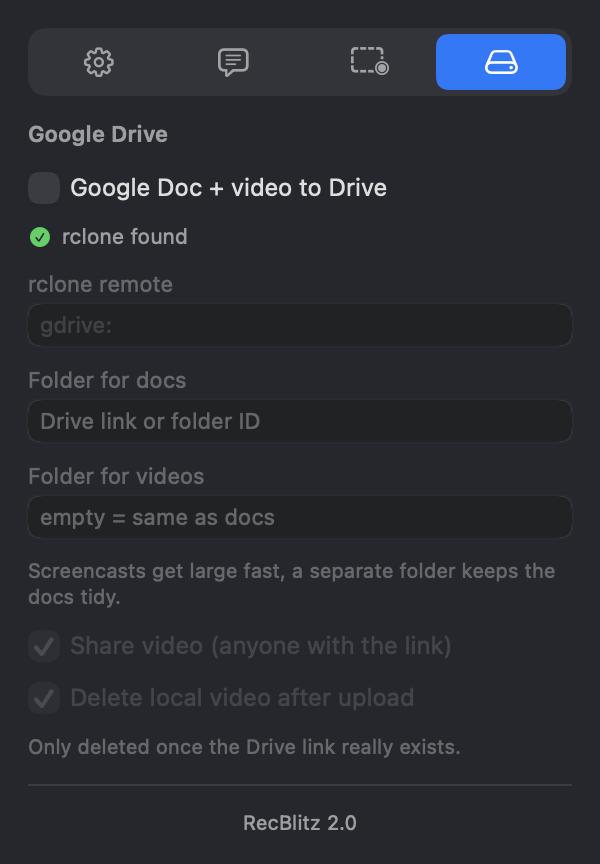

<!doctype html>
<meta charset="utf-8">
<style>
  /* Drei echte Einstellungs-Reiter nebeneinander, mit Voreinstellungen gerendert. */
  * { margin:0; padding:0; box-sizing:border-box; }
  body { width:1280px; height:600px; display:flex; align-items:flex-start; justify-content:center; gap:34px;
    padding-top:40px;
    background: linear-gradient(150deg,#16233d 0%,#22405f 55%,#2c5570 100%);
    font: 400 13px -apple-system,"SF Pro Text",sans-serif; }
  figure { display:flex; flex-direction:column; gap:12px; }
  figcaption { font: 600 12px ui-monospace,Menlo,monospace; letter-spacing:.12em; text-transform:uppercase; color:#2EC7A0; }
  .w { width:300px; border-radius:10px; overflow:hidden; border:.5px solid rgba(255,255,255,.12);
    box-shadow:0 24px 64px rgba(0,0,0,.5); background:#25272e; }
  .bar { height:26px; display:flex; align-items:center; gap:7px; padding:0 10px; background:#2e3038;
    border-bottom:.5px solid rgba(255,255,255,.08); }
  .bar i { width:11px; height:11px; border-radius:50%; display:block; }
  .w img { width:300px; display:block; }
</style>
<figure><figcaption>Notes where you want them</figcaption>
  <div class="w"><div class="bar"><i style="background:#e0655f"></i><i style="background:#e0a63f"></i><i style="background:#63bf58"></i></div></div></figure>
<figure><figcaption>Screen recording</figcaption>
  <div class="w"><div class="bar"><i style="background:#e0655f"></i><i style="background:#e0a63f"></i><i style="background:#63bf58"></i></div></div></figure>
<figure><figcaption>Optional Google Drive</figcaption>
  <div class="w"><div class="bar"><i style="background:#e0655f"></i><i style="background:#e0a63f"></i><i style="background:#63bf58"></i></div></div></figure>
